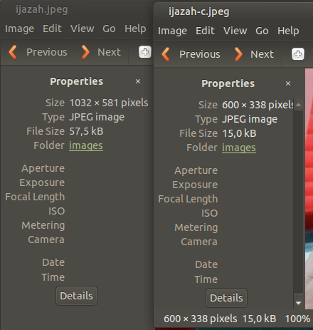

Kompresi gambar di Ubuntu
Posted on Mon 22 March 2021 in Ubuntu
Untuk dapat mengoptimalkan kecepatan akses sebuah website, maka gambar harus dikompresi secukupnya sehingga diperoleh ukuran yang kecil dengan kualitas yang cukup. Beberapa aplikasi berbasis command line interface (CLI) yang dapat dijalankan di terminal Ubuntu yang menjadi favorit saya untuk mengecilkan gambar.
Menggunakan imagemagick untuk memperkecil ukuran
Pertama instal imagemagick dengan perintah
sudo apt install imagemagick
Kemudian jalankan perintah convert untuk mengubah ukuran gambar
convert -resize 20% source.png dest.jpg # memperkecil ukuran gambar 20% dari aslinya
convert -resize 600x source.jpeg dest.jpeg # memperkecil ukuran gambar lebar 600 pixel dan tinggi proposional
convert -resize x300 source.jpeg dest.jpeg # memperkecil ukuran gambar tinggi 300 pixel dan lebar proposional
Berikut ini adalah hasil gambar yang ukurannya direduksi dengan menggunakan convert imagemagick.

Kompresi gambar dengan jpegoptim
Cara kedua untuk mendapatkan ukuran gambar yang kecil adalah dengan menggunakan package jpegoptim. Berbeda dengan convert nya imagemagick, jpegoptim memperkecil ukuran file dengan mempertahankan ukuran gambar tersebut. Secara default, jpegoptim dapat langsung digunakan untuk optimalisasi gambar dengan perintah sebagai berikut
jpegoptim dest.jpg
Jika ingin mendapatkan ukuran lebih spesifik, kita dapat menambahkan opsi ukuran yang kita inginkan. Contoh perintahnya adalah sebagai berikut
jpegoptim --size=100k dest.jpg --overwrite
dimana (k) di atas adalah kilobytes atau kita bisa menggunakan satuan persen (%).
Untuk dapat menyimpan gambar di folder lain, kita dapat menggunakan perintahnya
jpegoptim --size=15k dest.jpg --dest ~/Desktop
Beberapa opsi perintah lain pada jpegoptim adalah sebagai berikut:
jpegoptim kittens.jpeg cats.jpg feline_good.jpg # untuk optimalisasi beberapa gambar sekaligus
jpegoptim ~/Pictures/CatPhotos/*.jpeg # untuk optimalisasi semua gambar dalam satu folder
man jpegoptim # melihat semua opsi perintah jpegoptim
Kompresi gambar png dengan pngcrush
Hampir mirip dengan jpegoptim, aplikasi ini digunakan untuk kompresi gambar berekstensi png. Untuk menggunakannya, kita harus install pngcrush dengan cara sebagai berikut
sudo apt install pngcrush
kemudian kompresi file png dapat dilakukan dengan syntax berikut
pngcrush -reduce -brute source.png dest.png
Jika masih ada aplikasi favorit yang biasa kamu gunakan untuk optimalisasi gambar, silahkan ditulis di kolom komentar :)
Semoga bermanfaat
Referensi:
1. stackoverflow: how to easily resize images via command-line
2. stackoverflow: convert to fixed width proportional height
3. omgubuntu: compress Jpeg images on Linux from the terminal
4. imagemagick.org
5. manpages.ubuntu.com